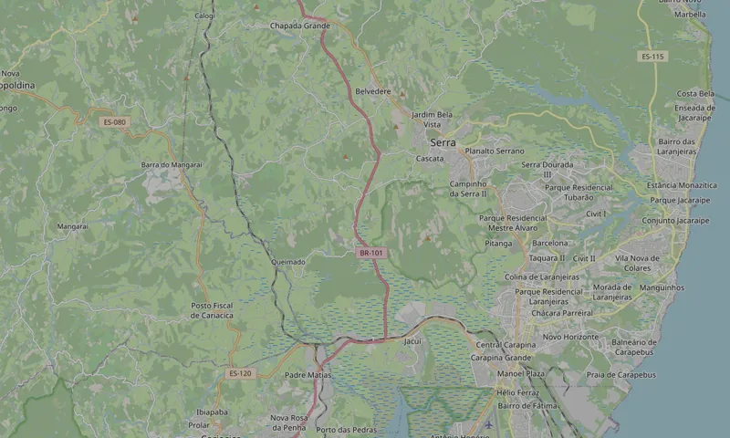

Brote na Trilha
Pedais com amigos pelo Espírito Santo.
- inscritos
- visualizações
- vídeos
Últimos vídeos
Os pedais mais recentes do canal. A lista se atualiza sozinha a cada vídeo novo.
Planejar pedal
Desenhe a rota do seu próximo pedal direto no mapa, em qualquer lugar do Brasil.

- Clique no mapa e a rota gruda nas ruas
- Distância, ganho de altitude e subidas com categoria
- Terreno, pontos de apoio e pontos de interesse com foto
- Porteiras, vaus e balsas no caminho
- Vento e previsão do tempo para a hora da saída
- Roadbook para imprimir e GPX para baixar
Último pedal
O passeio mais recente do canal, com o percurso e os números.

Tentando pedalar no trilho do trem
21 de novembro de 2026
- Distância
- 74,1 km
- Subida
- 392 m
- Tempo
- 3h28
- Média
- 21,3 km/h
Pedais por cidade: Vitória · Serra · Cariacica · Santa Leopoldina · Viana · Vila Velha · Guarapari · Fundão · Santa Teresa · São Gabriel da Palha · Águia Branca · Aracruz · Domingos Martins · Santa Maria de Jetibá · Subidas
Playlists
Os vídeos do canal separados por assunto. Escolha uma e assista aqui mesmo.
Sobre o canal
O Brote na Trilha é um canal de pedais com amigos no Espírito Santo: a gente pedala, filma e conta como foi. Cada vídeo traz o percurso, com distância, altimetria e tempo.
Acompanhe
Vídeos novos no YouTube, o dia a dia dos pedais no Instagram e as atividades no Strava.
Contato
Quer pedalar junto, sugerir uma rota ou falar com a gente? Escreva: